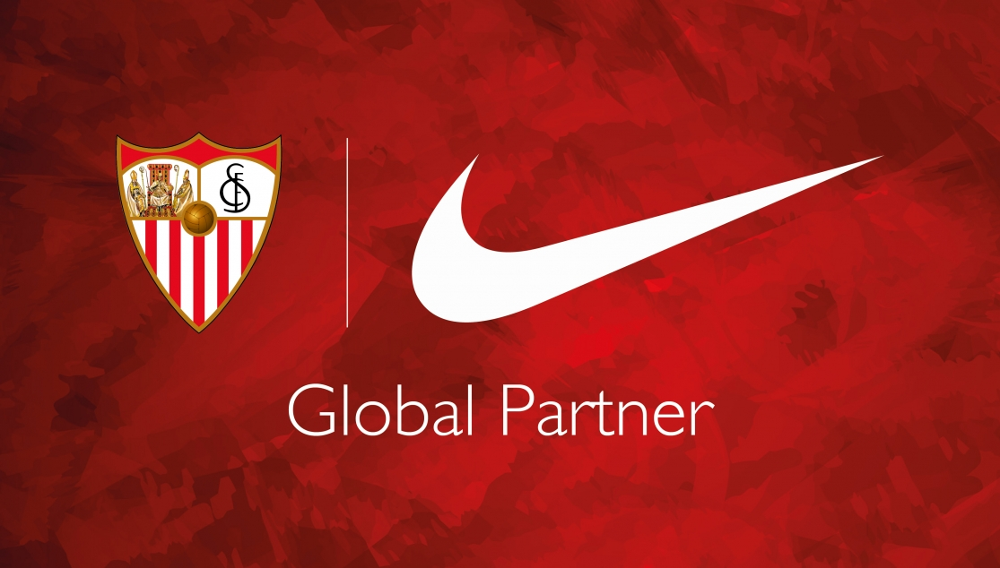

Sevilla Fútbol Club, or simply Sevilla, is Spain’s oldest sporting club solely devoted to football. Sevilla FC is based in Seville, the capital and largest city of the autonomous community of Andalusia. Sevilla FC plays in Spain’s top flight, La Liga. The club was formed on 25 January 1890, Scot Mr. Edward Farquharson Johnston being their first president. A few years later, on 14 October 1905, the club’s articles of association were registered in the Civil Government of Seville under the presidency of the Jerez-born José Luis Gallegos Arnosa. Sevilla FC is also the most successful club in Andalusia, winning a national league title in 1945–46, five Spanish Cups (1935, 1939, 1948, 2007 and 2010), one Spanish Super Cup (2007), a record five UEFA Cups/UEFA Europa Leagues (2006, 2007, 2014, 2015 and 2016) and the 2006 UEFA Super Cup. They were also designated by the International Federation of Football History and Statistics as the World's best club in 2006 and 2007, thus being the first club to achieve this distinction in two consecutive years.
Sevilla secured their place in the group stages of the Europa League with a 4-0 aggregate win over Sigma Olomouc. Following a 1-0 win in the Czech Republic, Sevilla eased through the second leg with strikes from Maxime Gonalons and Wissam Ben Yedder either side of an own goal securing a 3-0 victory. It took a 90th-minute penalty for RB Leipzig to book their spot in the group stages. They had drawn 0-0 with Zorya Luhansk in their first game, but Timo Werner opened the scoring for the hosts in the seventh minute.